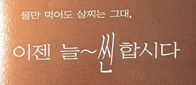

Yoon 우리신문
신문에 쓰이는 명조체는 작은 크기로
최대의 가독성을 발휘해야 하므로
고도의 만듦새를 추구합니다.
우리신문체는 불필요한 요소는 모두 생략,
단순화하고 닿자*의 모양과 크기를 일관성 있게
개선하여 탄생한 최고의 신문 전용 서체이지요.
*닿자 : 한글 ‘닿소리 글자’의 줄임말,
자음을 시각적으로 일컫는 표현.
출시년도:1995
스펙:한글 2,350자 / 라틴 95자
한국 한자 4,888자 / 부호 985자